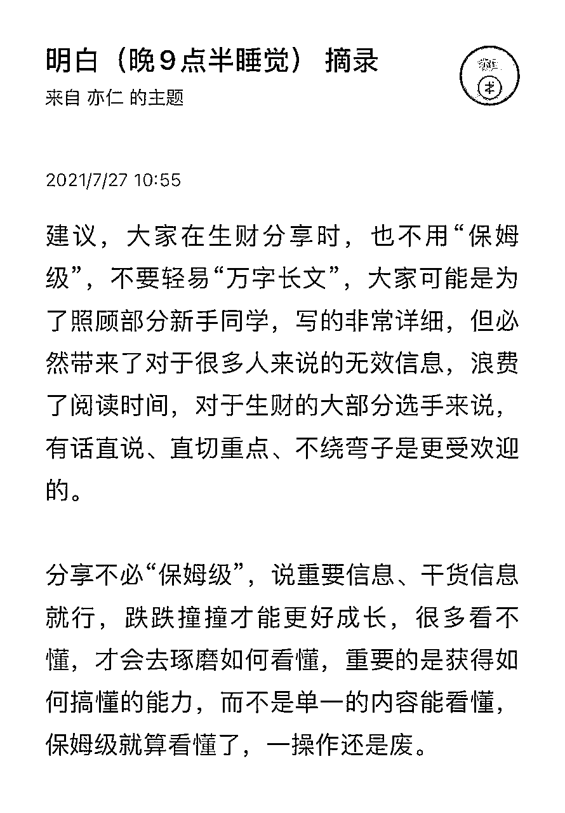
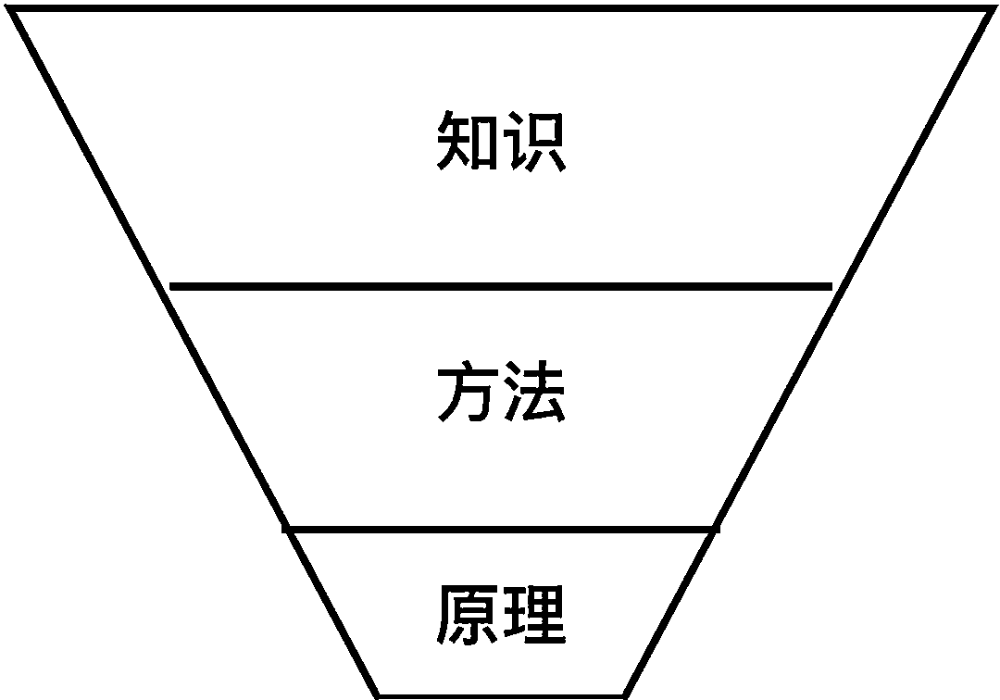

来源：https://pznme756ly.feishu.cn/docx/OSs3diZyyoNJGHxkDpCchP3Znse
亦仁之前分享过一段话 ——

什么是保姆级教程？
有一个观点是：要适合新手，要简单一点，要有清晰的步骤，要能让人落地实操，照着做就能看到反馈（赚到钱）。
也就是，我们常说的「干货」。
那问题来了，这种「照着做就能看到反馈」的干货，真的存在吗？
根据我的经验，是不存在的。
今天就来聊聊这个话题，希望带给你一些思考。
很多时候，我们想要的干货是：有清晰的步骤，能落地实操，让自己一字不差照做就能看到效果的教程。
但这个世界上，根本不存在这样的教程。
因为这个世界上，没有两个完全相同的人。
不同人的
这就导致——
于是会出现：同样一个步骤，不同人操作，会有不同的结果。
更重要的是，这个世界上，任何一件、稍微有点价值的事情，都会包含多个步骤，于是就会有多个影响因素存在。
所以，我们想完全按照教程，分毫不差的把一件事情完成，几乎是不可能的。
有人会说，这都是你写的，怎么证明它是对的？
看一个小案例。

「干货」步骤如下 ——
1 买一个苹果（如果家里有的话，就不用买）
2 把苹果拿到手上
3 把苹果咬一口，咽下去
4 重复第 3 步三十次，直到吃完苹果
这个任务步骤很详细、很清晰，看上去人人都能落地实操，够干货吧？
那是否有人没法完成呢？
有。
因为这 4 个步骤中，每个步骤都可能会出现各种影响因素——
假设苹果已经买到。
假设已经把苹果拿到手上。
假设已经咬了一口。
有人会说，你这太扯淡了，吃个苹果，哪来这么多意外？
注意，上面的描述里，都加了「可能」「觉得」这些字眼，意思是这些意外都可能出现。当然，除了上面列举的事项，肯定还有更多我没写出来、甚至想不到的意外。
而且，这 4 个步骤的每一点，都必须串联起来，才可能完成吃苹果的任务。如果其中某一点出现意外，那就吃苹果的任务就不可能完成。
我不是在抠字眼，或者抬杠。
这个案例只是一个「意象」，是为了方便描述。但它足以说明一个问题：即便像吃苹果这样在我们眼里极其简单的事件，它都会出现大量意外，让这个事情没法顺利完成。更别提学习、赚钱这些复杂事件。
因为这个事件中有一个极其不确定的因素：人。
不同人的
这就导致——
于是会出现，同样一个步骤，不同人操作，会有不同的结果。
无论多么简单的事情，只要有人参与，它就会变成一个复杂事件，导致结果的不确定性极大的增加。
这就是第 1 点说的：我们想完全按照教程，分毫不差的把一件事情完成，几乎是不可能的。
再看一个和钱比较靠近的案例。

亦仁之前写过一篇文章：《聊聊普通人如何在抖音上赚钱，分享了一个思路，有清晰的步骤——
这个教程够干货吧，能直接上手实操。
我们先不谈因为结果的不确定性，很多人不会去做的问题。
假设，一个人确定要去做，那他会遇到哪些意外？
1 准备一个微信号，先要有一个手机号，他可能很懒，就不做了。
2 刷抖音，他觉得浪费时间，没成长，就不愿意去做。
3 如果刷了 3 个视频，都没有联系方式，他可能就觉得没用，就放弃了。
4 加微信，可能某天因为加人频繁被警告，他担心，可能就放弃了。
5 加了别人一次，没被通过，他就可能放弃了
6 某天忘记刷了，他会觉得自己没毅力，也就放弃了。
7 ……
各种意外会出现，都会导致他完不成这个任务。
于是，这篇文章在他眼里，就不够干货。
事实上，这种包含任何步骤、能解决过程中任何意外的干货教程，是不存在的。
如果一心只想找到这种干货，找不到就不罢休，那大概率会是浪费时间，无效勤奋。
听起来好像很绝望，竟然没有教程能让我们照着做成事情，那该咋办？
答案其实很简单：搞懂原理。

每个领域、行业、事情，可以分为 3 部分 ——

不同领域、行业、事情，它们的知识、方法都会不一样，但原理是共通的。
我们常说的干货，其实就是在知识、方法层面。
当你理解了一件事情的原理，就能触类旁通到其他不同的事情上。
拿上面的 2 个案例。
如果一个人知道，吃水果是为了补充维生素的原理，那他就可以把吃苹果这个任务，换成吃橘子、吃梨，喝果汁，吃维生素片等。上面那些意外，都通通没有了，即便有，他也能知道如何变通，达到同样的效果。
如果一个人知道，抖音的推荐算法原理。当刷了 3 个视频，都没有联系方式，他知道这是正常的。他会选择继续刷，然后在有联系方式的视频那里，点赞、多看几遍。抖音就会给他推荐更多类似的视频。
其他的问题，也能依次类推，解决掉。
一个近点的案例，我在生财有术看到过一个帖子，有人模仿七夕蛤蟆的案例，在圣诞节做一个活动，也赚了几万块钱。因为他理解了用户需求的原理，所以能举一反三到其他事情上。
如果不理解原理，那七夕蛤蟆，和圣诞节，就完全就是两件事，文案、用户都不一样，肯定也无法照搬成功。
搞懂原理，就是了解事物的底层逻辑，我们就能一通百通，知道如何在不同场景下，复制、拓展、变通，就能做到很好。
相反，只看干货，不深入学习原理，会有 2 个坏处 ——
所以，我们要放下追求实操干货的心理，多研究干货背后的原理。
原理是不变的东西，无论什么情况，它都能帮我们举一反三，触类旁通，做好事情。
而干货，不但没太大用处，还会让人花更多时间，心态更糟，成长更少。
那如何才能搞懂，知识、方法、模式背后的原理呢？
方法也很简单 ——
就是，让我们看到一篇赚钱教程，里面有很多方法、思路等，不要单纯的只看这些「干货」，还需要花更多一些时间，去思考 ——
如果碰到每一个方法/思路，你都能这么去思考一遍。
那这个方法在你眼里，就不单纯只是一个能用在某个项目上的方法。
而是可以举一反三到非常多的项目上。
更重要的是，当你在实践方法的过程中，如果遇到一些意外、问题，你就能更好的知道，该如何灵活变通，解决掉这个意外、问题。而不是：卧槽，这里的结果怎么和教程不一样啊，换一个教程吧。

有同学会觉得：学习原理太难了，普通人很难做到，还不如多看点干货。
但其实，逻辑上面已经讲清楚了，
原理和干货，
不是，难和简单的问题。
而是，有效和无效的问题。
不是，100 和 1 的问题，
而是，100 和 0 的问题。
在一个错误的方向上，无论做多少努力，都大概率不会有结果。
而在一个正确的方向上，虽然难，虽然慢，但只要不断学，就会不断进步，就必然能看到效果。
有一句话比较扎心，但很有道理 ——
如果你不会游泳，怎么换游泳池都没用。
放到这里就是 ——
如果我们不理解事情、知识、方法、思路背后的原理，无论学习多少实操、落地的干货，都不太可能发挥作用。
追求原理：困难、复杂、要延时满足，有效。
追求干货：困难、简单、有即时反馈，无效。
无论选哪一个，都会经历难受，都需要付出时间、精力、压力、情绪。
我个人一直都觉得：要选择正确的难受，这样才对得起自己的勤奋，和努力、汗水。
要不然，就会变成虚荣指标：我花了多少时间，多看了多少干货，我尝试了多少项目……但，没有结果。
祝大家每天的付出，都能有收获，并且未来每一天都可以帮你，做到更多事情。
我是明白，生财有术 8 期老圈友，星球编号 20。
程序员出身，目前自己创业，做一个成长社群《日新月异俱乐部》
以下是我在生财的历史 26 篇精华帖合集
也代表我的一个成长轨迹，
如果有兴趣，点击链接直达 ——
2024年（x1）
(这个还没得精华，但我觉得写的很好哈哈，是赚钱最重要的一个环节）
2023年（x1）
2021年（x3）
2020年（x6）
2019年（x8）
2018年（x3）
2017年（x2）